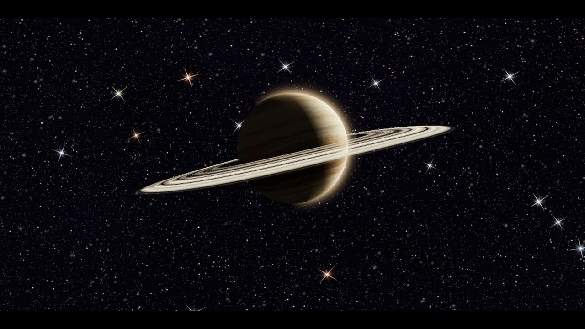
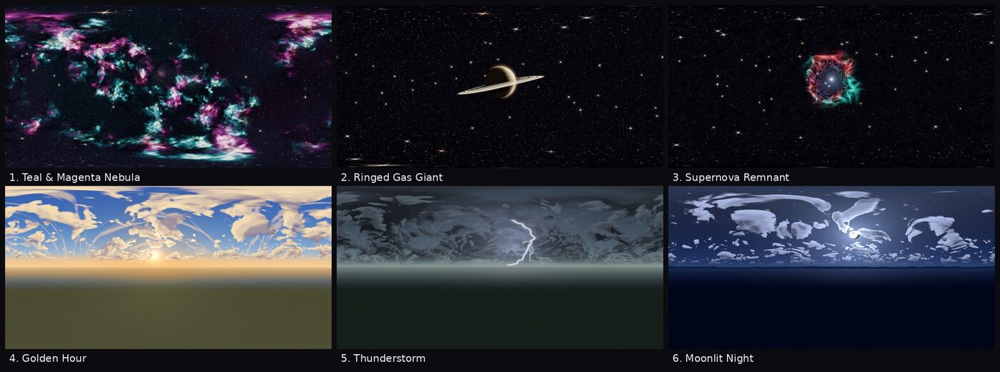

Want something to follow along with? The free Skybox Sampler has six finished skies (nebula, ringed planet, supernova, golden hour, thunderstorm, moonlit night) as 2048 x 1024 panoramas with a ready-made sky material and Environment for each one. Drop the addons/ folder into a project and every step below is already done.
What you need
- The fastest way (an Environment resource)
- Add a panorama skybox by hand
- Light the scene from the sky
- Switch skies from a script
- Six-face cubemaps in Godot 4
- No image? ProceduralSkyMaterial and PhysicalSkyMaterial
- Common problems and fixes
- Ready-made skies
A skybox in Godot 4 is not a box at all. The engine draws the sky as a function of the view direction, using a Sky resource whose sky material decides what colour each direction gets. The most common material, PanoramaSkyMaterial, reads that colour from one equirectangular image (a 2:1 "lat-long" panorama). The Sky lives inside an Environment, and the Environment is attached to the scene by a WorldEnvironment node. Three objects, one chain: WorldEnvironment → Environment → Sky → sky material → image.

The fastest way: use an Environment resource
If a sky pack ships .tres Environment files (the sampler and our paid packs do), the whole setup is two clicks:
- Copy the pack's
addons/<pack>/folder into your project'saddons/folder. The editor imports the textures on its own; there is no plugin to enable for a plain asset pack. - Add a WorldEnvironment node anywhere in your 3D scene (one per scene).
- In the Inspector, click the Environment property, choose Load, and pick
res://addons/skybox_sampler/environments/02_golden_hour.tres(or any other sky).
The sky, its ambient light and its reflections are all configured inside that one resource. Run the scene and the sky is there.
Add a panorama skybox by hand
For any 2:1 panorama (PNG, JPG, or an HDR .exr/.hdr file):
- Drop the image into your project, for example
res://skies/golden_hour.png. Leave the default import settings for now (see the fixes below if the horizon looks soft). - Add a WorldEnvironment node. In the Inspector, set Environment to New Environment.
- Expand the Environment. Under Background, set Mode to Sky.
- Under Sky, set Sky to New Sky, then expand it and set Sky Material to New PanoramaSkyMaterial.
- Expand the material and drag your image into its Panorama slot.
That is a complete skybox. The same Environment can be saved as a .tres (right-click the resource → Save) and reused in every scene.
The equivalent in a text resource looks like this, which is also what the sampler ships:
[gd_resource type="PanoramaSkyMaterial" load_steps=2 format=3]
[ext_resource type="Texture2D" path="res://skies/golden_hour.png" id="1"]
[resource]
panorama = ExtResource("1")Light the scene from the sky
By default a new Environment lights objects with a flat ambient colour, so a bright sunset sky can sit behind grey, dead-looking models. Two settings fix that, both inside the Environment:
- Ambient Light → Source: Sky. Objects pick up the sky's average colour and brightness. Sky Contribution (0 to 1) blends it with the flat ambient colour; 1.0 means all sky.
- Reflected Light → Source: Sky. Metals and glossy surfaces reflect the panorama. Godot builds a radiance cubemap for this; the Sky → Radiance Size setting (default 256) is plenty for stylised skies.
Add a DirectionalLight3D and point it the way the sun or moon sits in the image; the sky gives soft fill, the light gives shadows. For a night sky, lower the light's Energy and tint it blue rather than lowering the Environment's energy, so the sky itself stays readable.
The sampler's Environment files set both sources to Sky already:
[resource]
background_mode = 2 ; Sky
sky = SubResource("Sky_1")
ambient_light_source = 3 ; Sky
ambient_light_sky_contribution = 1.0
reflected_light_source = 2 ; SkySwitch skies from a script
Because the whole look is one Environment resource, swapping skies at runtime is one line. This is the sampler's demo script, trimmed: a camera that rotates slowly and cycles skies on Left/Right.
extends Node3D
const ENVS := [
"res://addons/skybox_sampler/environments/02_golden_hour.tres",
"res://addons/skybox_sampler/environments/08_thunderstorm.tres",
"res://addons/skybox_sampler/environments/12_moonlit_night.tres",
]
var idx := 0
@onready var we: WorldEnvironment = $WorldEnvironment
func _ready() -> void:
we.environment = load(ENVS[idx])
func _unhandled_input(e: InputEvent) -> void:
if e.is_action_pressed("ui_right"):
idx = posmod(idx + 1, ENVS.size())
we.environment = load(ENVS[idx])To change only the image and keep your lighting settings, reach into the material instead:
var mat := we.environment.sky.sky_material as PanoramaSkyMaterial
mat.panorama = load("res://skies/moonlit_night.png")Fading between two skies is not built in, and only one WorldEnvironment is active at a time. The usual trick: tween the Environment's Background → Energy down to 0, swap the panorama, and tween it back up.
Six-face cubemaps in Godot 4
Godot 4 has no "CubemapSkyMaterial". If your sky comes only as six cube faces (the Unity layout: Front, Back, Left, Right, Up, Down), you have two options:
- Use the panorama instead. Most packs ship both; ours always do. PanoramaSkyMaterial is the simplest and the one the editor supports end to end. If you only have the six faces, our free skybox converter stitches them into a panorama in the browser.
- Write a small sky shader. Set the Sky's material to a ShaderMaterial with
shader_type sky;, declareuniform samplerCube faces;, and sample it withCOLOR = texture(faces, EYEDIR).rgb;. Build theCubemaptexture by importing the six images as one Cubemap (select the images, Import dock → Import As: Cubemap) or by stacking them vertically in one 1:6 image, which the Cubemap importer expects.
No image? ProceduralSkyMaterial and PhysicalSkyMaterial
Both ship with Godot and need no texture. ProceduralSkyMaterial is a stylised gradient (top colour, horizon colour, ground, a sun disc per DirectionalLight3D) and is very cheap, which makes it a good placeholder and a good mobile sky. PhysicalSkyMaterial simulates Rayleigh and Mie scattering, so the colour follows the sun's height; it costs more per frame and has no clouds. Neither gives you a painted look, a nebula, or a second moon; that is where an image sky earns its place.
Our own tool for this gap is SkyGen, a Godot 4 editor addon that paints a full panorama (gradient, sun, stars, nebula, clouds) from sliders and saves it as a PNG plus a ready PanoramaSkyMaterial. The free SkyGen LITE has the gradient, sun and star layers up to 1024 px, so you can try the workflow first. Both are listed on itch alongside the packs below.
Common problems and fixes
The sky does not show up
- No WorldEnvironment in the scene, or its Environment is empty. The editor's preview sky (Project Settings → Rendering → Environment → Default Environment) is not used in a running game unless you set it there.
- Background Mode is still Clear Color. Set it to Sky.
- A Camera3D with its own Environment override wins over the WorldEnvironment. Check the camera's Environment property is empty.
A vertical line or seam
- The image itself does not wrap: its left and right edges differ. Open it in an image editor and offset it by half its width to see the join. A seamless panorama shows no line at any rotation. (Every sky in our packs is checked numerically for this before it ships.)
- A faint hairline at the join on an otherwise seamless image is usually the mipmap chain blending the two edges. Select the image, open the Import dock, set Mipmaps → Generate to off, and Reimport.
Pinching or a swirl straight up and straight down
The panorama was painted in 2D without accounting for the poles. Only a sky rendered as a function of direction (or a proper 3D render) is clean at the zenith. If the pinch is at the bottom only, hide it: most games never let the camera look straight down past the ground.
Blurry or soft horizon
- Resolution. A 2048 x 1024 panorama covers 360 degrees, so a 90 degree field of view sees only 512 pixels across. Use 4096 x 2048 for a desktop game (our paid packs) and 2048 for mobile or a background that is mostly behind UI.
- Texture compression. The default import compresses to VRAM (S3TC/ETC), which bands smooth gradients and softens stars. In the Import dock set Compress → Mode to Lossless for the sky image and Reimport. It costs memory but a sky is one texture.
Objects look grey under a colourful sky
Ambient Light Source and Reflected Light Source are still Background or Disabled. Set both to Sky (see above).
The sky is too bright or too dark compared with the scene
Use Background → Energy on the Environment to scale the sky image, and the DirectionalLight3D's energy for the scene. With an HDR panorama, also check Tonemap: ACES or Filmic with a sensible exposure keeps the sun from clipping to white.
Rotating the sky
Rotating the WorldEnvironment node does nothing: the sky is drawn in world space. Use the Environment's Sky → Rotation property instead (in code, environment.sky_rotation = Vector3(0, deg_to_rad(90), 0)) to turn the sun or the galaxy to where your scene needs it.
Ready-made skies for Godot 4 and Unity
Every pack ships panoramas, six-face cubemaps named for both engines, a Godot 4 addons/ folder with a sky material and Environment per sky, and a Unity import guide. Royalty-free for commercial and non-commercial projects, no attribution required.

| Pack | Skies | Price |
|---|---|---|
| Skybox Sampler | 6 (two from each paid pack), 2048 x 1024 | Free |
| Space Skyboxes | 20 nebulae, planets, galaxy, eclipse, black hole, 4096 x 2048 | $3.99 |
| Stylized Sky Skyboxes | 16 day, sunset, night and storm skies, 4096 x 2048 | $3.99 |
| Alien Worlds Skyboxes | 16 exoplanet skies, 4096 x 2048 | $3.99 |
Get the free sampler All packs on itch.io
The skies are painted by procedural code written with AI assistance, then checked by eye and by numeric seam tests. No AI image generator is used; every store listing carries the same disclosure. Also see the Unity skybox guide.